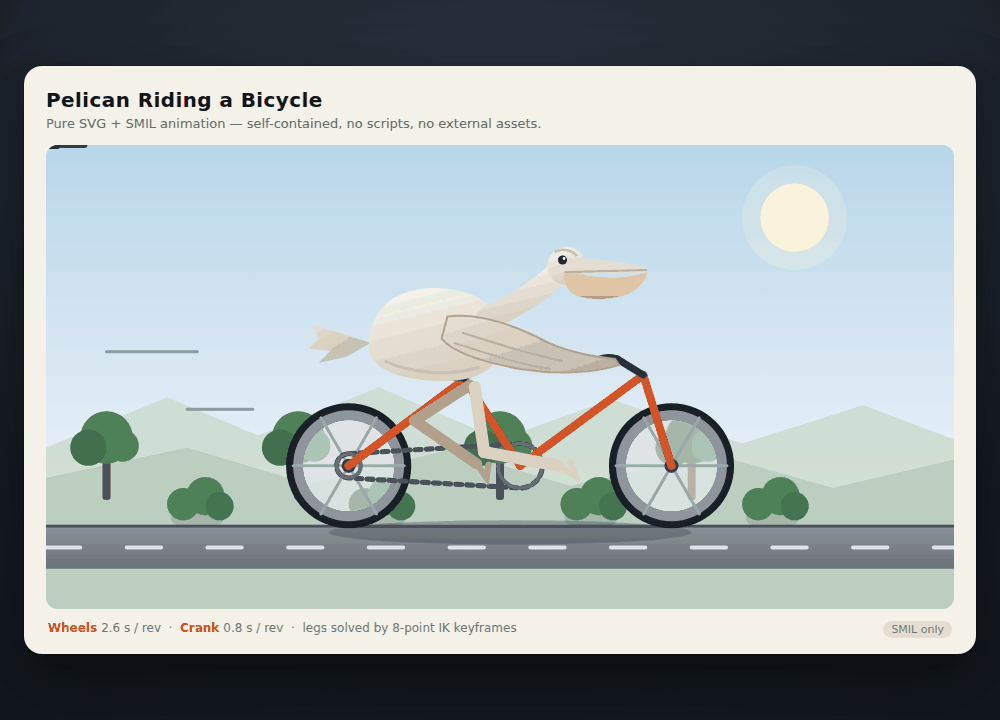
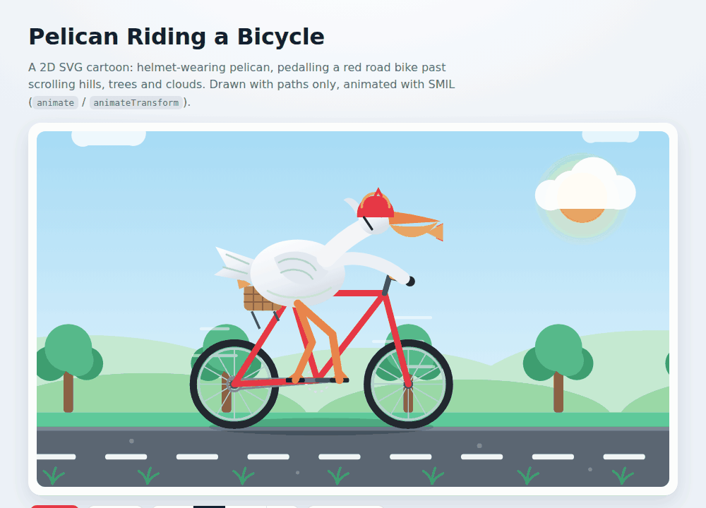
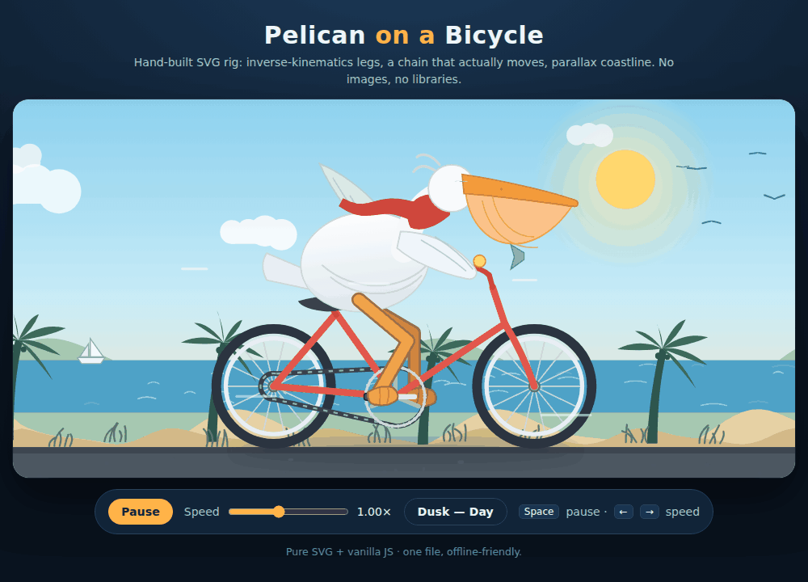

GSQ-RCO IQ2_XS
349.7 seconds · max effort

October 11, 2026 · Claude Code · max effort · one trial per weight · original outputs
349.7 seconds · max effort

165.6 seconds · max effort

453.3 seconds · max effort
